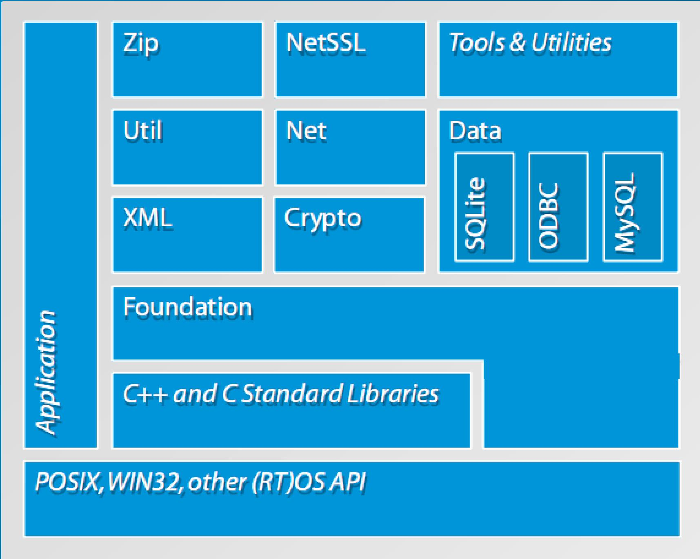

概述
POCO库概述
POCO是一个C++的开源库集。同一般的C++库相比，POCO的特点是提供了整一个应用框架。如果要做C++程序应用框架的快速开发，我觉得STL+boost+Poco+Qt+Mysql实在是个不错的组合。poco开发库的特点,非常适合写后台处理程序,效率也是很高的.前台界面程序使用Qt框架库,非常好,两个库相辅相成,可解决项目上的大部分问题.
Poco C++库是：
一系列C++类库，类似Java类库，.Net框架，Apple的Cocoa;
侧重于互联网时代的网络应用程序
使用高效的，现代的标准ANSI/ISO C++，并基于STL
高可移值性，并可在多个平台下可用
开源，并使用Boost Software License发布
不管是否商用，都完全免费
下面的这张图提供了POCO库的一个结构。

POCO C++ Libraries提供一套 C++ 的类库用以开发基于网络的可移植的应用程序，功能涉及线程、文件、流，网络协议包括：HTTP、FTP、SMTP 等，还提供 XML 的解析和 SQL 数据库的访问接口。
POCO C++ Libraries 提供一套 C++ 的类库用以开发基于网络的可移植的应用程序，功能涉及线程、线程同步、文件系统访问、流操作、共享库和类加载、套接字以及网络协议包括：HTTP、 FTP、SMTP 等；其本身还包含一个 HTTP 服务器，提供 XML 的解析和 SQL 数据库的访问接口。POCO库的模块化、高效的设计及实现使得POCO特别适合嵌入式开发。在嵌入式开发领域，由于C++既适合底层（设备I/O、中断处理等）和高层面向对象开发，越来越流行。
POCO C++是一个开源的C++类库的集合，它主要提供简单的、快速的网络和可移植应用程序的C++开发，这个类库和C++标准库可以很好的集成并填补C++标准库的功能空缺。POCO库的模块化、高效的设计及实现使得POCO特别适合嵌入式开发。
POCO C++四个核心库 核心库包括：
Foundation 是POCO C++的核心库，包含了底层平台的抽象层，还有经常使用的实用类和函数。包含了固定大小的整数类型，提供整型与字节转换的函数。
Poco::Any类(基于 boost::Any),统一的错误处理及调试工具，包含各种异常类和支持断言功能，同时还包含一些内存管理类，基于引用计数的智能指针，和用于buffer管理及内存池的类。
XML 支持读取, 处理及写XML. 遵循POCO的一个指导原则—
Util 它包含了创建命令行和服务器应用的框架. 包括命令行参数处理支持(校验, 绑定到配置属性, etc.) 及管理配置信息. 支持不同的配置文件格式— Windows形式的 INI 文件, Java-类型的属性文件, XML文件及Windows注册表.
Net 库使得编写基于网络的应用容易. 不管是应用是简单的通过纯TCP socket发送数据还是需要完整的内建HTTP server的应用，都可以在Net库中找到有用的东西。
NetSSL，主要在Net库中网络类中提供SSL支持；
Date库，在不同的SQL库中提供统一的接口访问。
功能性库组件：
DynamicAny与Any类
Cache框架
基于OpenSSL的密码系统
日期，时间类库
事件和通知框架
FTP客户端
跨平台的文件系统类库
HTML表单类库
HTTP客户端和服务端（支持SSL），C++ 服务器页面编译器
日志框架
多线程框架（线程池，活动对象，工作队列等）
POP3客户端类库
跨平台，一次编写，多平台编译和运行
进程管理和进程间通信类库
反射框架
基于PCRE的正则表达式
SMTP客户端类库
数据库访问类库（SQLite,MySQL, ODBC)
支持SSL/TLS，基于OpenSSL
动态类库加载
先进的内存和指针管理（Buffer, Pool）
Socket类库
网络数据流类库，支持Base64,HexBinary编解码，压缩等等
字符串格式化和其它字符串工具类库
TCP服务器框架（多线程）
文本编码和转换
Tuples
URI支持
支持UTF8和Unicode编码
UUID生成器
XML生成和解析器
Zip文件操作类库
特点
跨平台库的封装
Application的应用架构的模块化。
不同操作系统的底层API使用
类的设计和设计模式的应用
泛型
优点
全面的，完整的C++框架，可减少开发工作，快速让产品走向市场
易学易使用，以及相当多的示例代码和良好的文档
原生的C++代码，性能优秀，低内存占用
平台无关，一处编写，跨平台编译和运行
大多数情况下，可以开发机上完成开发和调试工作
可以非常容易的迁移到新平台
比boost更好的线程库，特别是一个活动的方法的实现，并且还可设置线程的优先级。
比 boost:asio更全面的网络库。但是boost:asio也是一个非常好的网络库。
包含了一些Boost所不包含的功能，像XML，数据库接口等。
跟Boost相比，集成度更高，是更加统一的一个库。
Poco的c++代码更清洁，现代和易理解。对不是模板编程专家的人来说，POCO的代码比大多数Boost库容易理解得多.推荐初学者看这个，poco估计是初学者唯一能够比较容易看懂的基础库源码了,其他如abseil，folloy，wange源码皆艰涩.
可以在许多平台上使用。
缺点
1) 文档有限。但这一定程度上是因为代码的容易理解。
2) 跟Boost相比用户社群小得多。
3) 有多少能集成进C++标准是个问题。而Boost在这方面不是个问题。
许多POCO的用户把POCO和Boost一起并用。
Boost是高质量的库，但它不是个框架。
Boost:asio处理高并发的效率还可以。 单连接吞吐稍微弱点。 如果选用， 最好封装好， 别让boost代码吞噬你的代码， 那样最后不可收拾。 呵呵。
asio在windows下效率是最好的。 基本接近自己在iocp上开发的效率。 在linux下， 他默认选用epoll, 但中间为了做了层stream cache, 效率稍有损失。 而且他的epoll规则用的不太合理， 可以自己修改他的代码， 达到自己的需求。
在freebsd下， 他默认是select的， 要自己修改他的代码条件编译， 才可以支持kqueue
设计理念
基于现代的、标准的ANSI C++编写，使用C++ STL库。模块化设计，极少的外部依赖，易于编译和使用。结合传统的面向对象与现代的C++设计，代码易读，代码风格统一，以及相当全面的测试用例。
Poco是一个强大的类库，并易于构建自己的应用程序
Poco帮助你创建跨平台的应用程序（一次编写，多平台编译和运行）
模块化和可扩展，可应用于嵌入式到企业级程序
提供全面，易懂的编程接口
使用C++语言，快速且高效
Poco崇尚简易
在设计，代码风格和文档上保持一致
Poco强调代码质量，包括可读性，综合性，一致性，编码风格和可测试性
Poco使得C++编程更加容易
指导方针
高度关注代码质量，编码风格，一致性，可读性
高度关注测试
注重实用性
基于现有的，可靠的组件开发
支持平台
桌面/服务器: Windows, Linux, Mac OS X, Solaris, HP-UX, AIX
嵌入式系统: Windows Embedded CE, Embedded Linux (uClibc or glibc), iOS, QNX, VxWorks, Android
最低系统要求: 75 MHz ARM9, 8 MB RAM (Embedded Linux).
Microsoft Windows
Linux
Mac OS X
HP-UX, Solaris, AIX*
Embedded Linux (uClibc, glibc)
iOS
Windows Embedded CE
QNX
Poco应用场景
创建自动化的中间件和设备
工业自动化和工业设备
流量控制系统
健康系统
测量，数据收集和测试系统
消费电子产品和家庭自动化产品
测量
航空交通管理系统
VoIP
票务和入口控制系统
包装应用程序
参考资料
Foundation 库分析： 1. POCO C++库学习和分析 -- 跨平台库的生成
2. POCO C++库学习和分析 -- Foundation库结构
3. POCO C++库学习和分析 -- Foundation库SharedLibrary模块分析
10. POCO C++库学习和分析 -- 内存管理 (二)
11. POCO C++库学习和分析 -- 内存管理 (三)
13. POCO C++库学习和分析 -- 通知和事件 （一）
14. POCO C++库学习和分析 -- 通知和事件 （二）
15. POCO C++库学习和分析 -- 通知和事件 （三）
16. POCO C++库学习和分析 -- 通知和事件 （四）
23. POCO C++库学习和分析 -- 异常、错误处理、调试